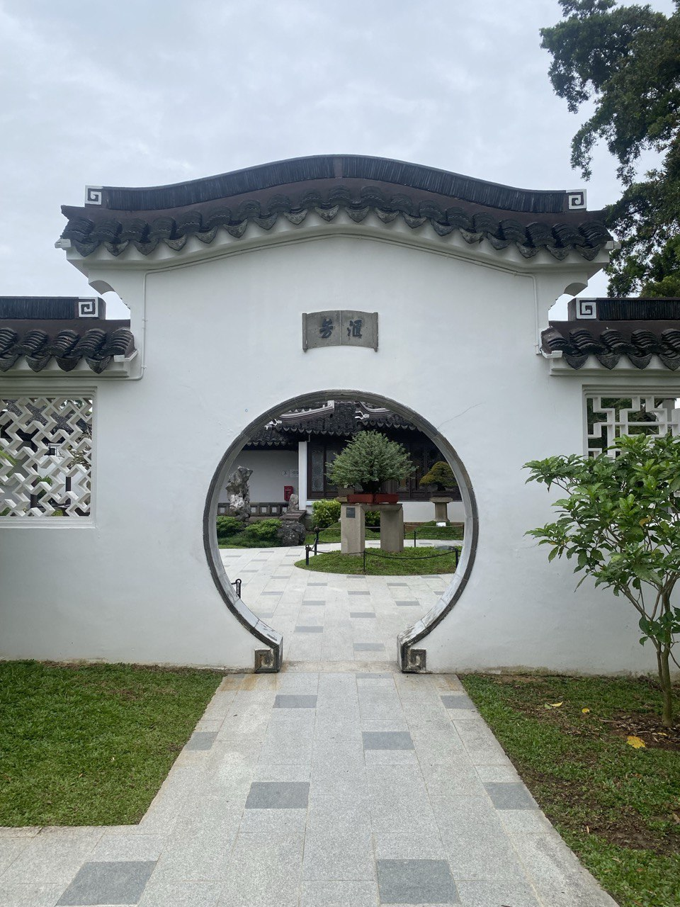

Chinese Garden Inspiration
The Moon Gate at the Bonsai Garden in Singapore is a classic circular architectural feature inviting visitors into a Suzhou-style bonsai landscape. It echoes traditional Chinese garden symbolism of harmony and completeness, framing the view before you pass through and setting the tone for contemplative exploration of the bonsai exhibitions and courtyards.
My Dream Garden

Inspired by this elegant gateway, your dream Moon Gate is enhanced with flowering plants and soft lighting that gently usher me and visitors into my garden’s heart. It’s a threshold to peace and reflection, echoing that timeless sense of arrival and transition.
Through circular doorway wide,
I glimpse a world where calm resides.
Curved stone and bonsai trees,
Whisper stories in the breeze.
I glimpse a world where calm resides.
Curved stone and bonsai trees,
Whisper stories in the breeze.